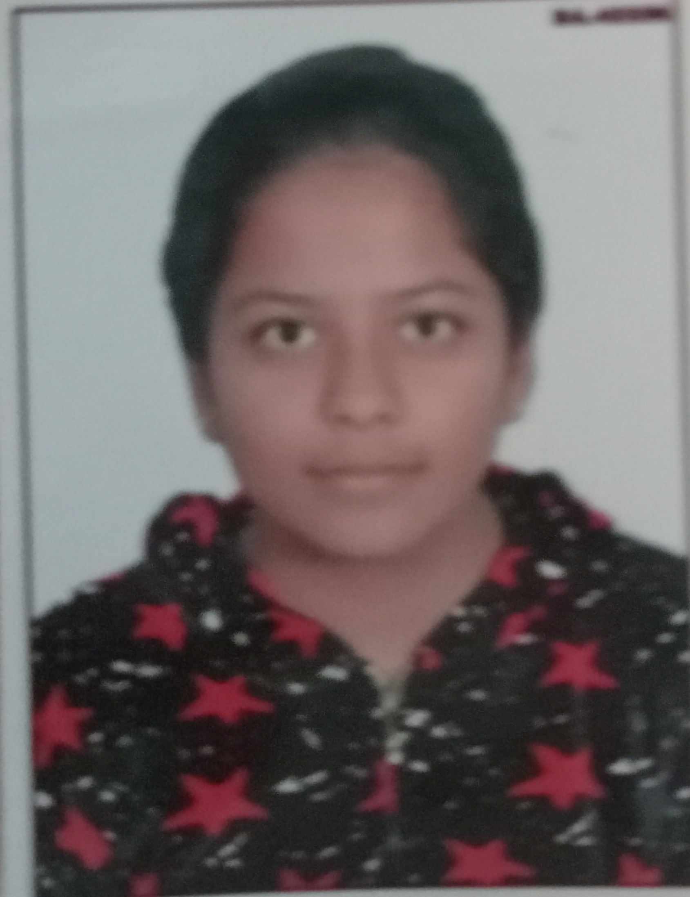

Priyanshi Agarwal

Energetic and passionate college student working towards B Tech in
COMPUTER SCIENCE ENGINEERING(AIML) at Lakshmi Narain College Of Technology
& Science. Aiming to use my knowledge that I have acquired from my
coursework as well as self study and with my hard work to satisfy my
internship at your organization and also willing to learn more from this
internship.
Personal info:
- B Tech
- Lakshmi Narain College Of Technology & Science
- 03/10/2023 ● Bhopal, INDIA
- Course: B Tech in Computer Science Engineering (AIML)
Objective:
To work in a firm with a professional work drive n environment where
I can utilize and apply my Knowledge , skills which would enable me
as a fresher to grow while fulfilling organizational goals.
Education:
- Lakshmi Narain College Of Technology & Science
- B Tech( Computer Science Engineering + AIML )
- 7.72 (CGPA)(pursuing) - 2023
- CBSE - ST.Joseph co-ed School
- CBSE - ST.Joseph co-ed School
Awards:
- On-The-Spot Writing Contest
- Dodge Ball Competition
- SOF National Science Olympiad
- SOF International Mathematics Olympiad
- Mini Marathon
- Workshop on Tiny ML
skills:
- C and C++ Language
- Python Language (pursuing)
Others: